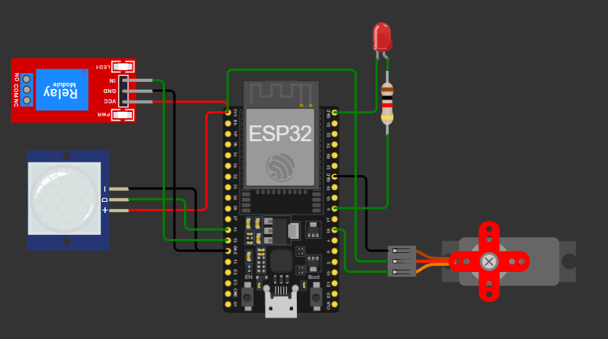
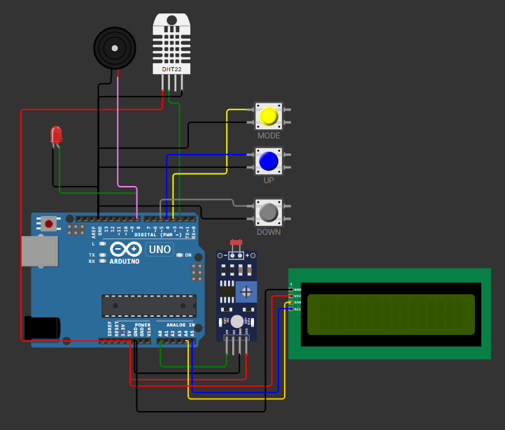

Saya adalah individu yang sangat termotivasi dan antusias dengan semangat untuk terus belajar dan berkembang secara pribadi. Saya memiliki keterampilan komunikasi dan interpersonal yang sangat baik, yang memungkinkan saya bekerja secara efektif baik secara mandiri maupun dalam tim.

Project Smart Hygiene merupakan sistem kebersihan otomatis berbasis ESP32 yang dirancang untuk membantu menjaga higienitas tanpa sentuhan langsung. Sistem ini menggunakan sensor PIR untuk mendeteksi adanya gerakan atau keberadaan tangan pengguna.
Ketika gerakan terdeteksi, ESP32 akan mengaktifkan relay yang mengontrol pompa cairan seperti hand sanitizer atau sabun cair, kemudian servo akan bergerak membuka dispenser, dan LED menyala sebagai indikator bahwa sistem sedang bekerja.
Setelah beberapa detik, pompa dan LED akan mati serta servo kembali ke posisi awal. Sistem ini cocok diterapkan di tempat umum karena lebih praktis, hemat, dan membantu mengurangi penyebaran kuman melalui kontak langsung.

Project ini merupakan sistem monitoring lingkungan berbasis Arduino yang menggunakan sensor DHT22 dan LDR untuk memantau kondisi suhu, kelembapan, dan intensitas cahaya secara real-time.
Sensor DHT22 berfungsi membaca suhu dan kelembapan udara, sedangkan sensor LDR digunakan untuk mendeteksi tingkat cahaya di sekitar. Hasil pembacaan sensor ditampilkan pada LCD I2C 16x2 secara bergantian agar pengguna dapat memantau kondisi lingkungan dengan mudah.
Sistem juga dilengkapi fitur pengaturan batas maksimum (threshold) menggunakan tombol mode, up, dan down. Jika nilai sensor melebihi batas yang telah ditentukan, maka buzzer akan aktif sebagai alarm peringatan.
Project ini cocok digunakan sebagai sistem monitoring ruangan pintar, laboratorium, gudang, maupun area penyimpanan yang memerlukan pengawasan kondisi lingkungan secara otomatis.